이번 행사에서는 도서관마다 10월 22일 (토요일) 오후 2시부터 40분씩의 강의가 두 분의 강사에 의해 진행될 예정이며,
또 다른 2명의 자원봉사자가 행사 진행을 도와주게 됩니다. 도서관에서는 강연 준비 및 정리 시간까지 약 1시부터 4시반 정도까지
도서관의 강연 공간을 저희에게 무상으로 빌려주시면 됩니다. 성공적인 강연을 위해 강연장으로 사용될 공간에는 빔프로젝터와 스크린이 설치되면 좋겠고,
공간이 큰 경우에는 마이크로폰을 준비해 주시면 강연을 듣는 청중과 강연자에게 큰 도움이 되겠습니다.
강연 홍보는 저희 쪽에서 가능한 미디어를 통해 진행하고, 참여 도서관에도 홍보 관련 자료를 추후 보내드릴 예정입니다.
이 행사는 무료로 진행되어야 하며, 행사를 준비하는 주최 측에서 여러 기업들의 후원을 받아,
강연을 들으러 온 어린이들에게 소프트웨어 서적 등 약간의 기념품을 준비할 수 있을 것으로 기대하고 있습니다.
강연자 및 진행자 모집 안내
이 행사에는 신청 도서관마다 두 명의 강연자와 또 다른 두 명의 진행자가 필요합니다. 즉 한 도서관에 2+2=4명이 필요합니다.
강연자로 지원하기 위해서 강연 경험이 있을 필요는 없습니다. 진행자로 지원하기 위해서 행사 진행 경험이 있을 필요는 전혀 없습니다.
당연히 어떤 학력/나이/신체적 조건이 필요하지도 않습니다. 여러분을 도와드리기 위해 주최측에서 슬라이드 template (내용은 물론 본인이 채우셔야 합니다.)과 강연/진행 매뉴얼을 준비해 드리려고 합니다.
강연자는 소프트웨어가 재미있고/중요하다고 믿는 분으로서 다음과 같은 분이면 좋겠습니다.
(다음 조건 가운데 하나라도 해당이 되면 됩니다)
단 한 줄이라도 내가 작성한(기획한,리뷰한) 코드가 어떤 서비스, 제품(가전, 자동차...), 게임(모바일, PC, ..) 등에 사용된 적이 있는 개발자 그래서 '이게 제가 만든건데요'를 작은 소리로라도 주장하실 수 있거나, 강연 때 직접 보여주실 수 있는 분.
미래 소프트웨어에 대한 완전 흥미 있는 이야기 거리를 가지신 분.
소프트웨어를 활용한 예술이나 Maker 활동을 하시는 분.
주변에 자기 빼고 전부 소프트웨어 개발자여서 그들에 대하여 아주 잘 이야기하실 수 있는 분
아무 준비없이 온 어린 친구들이 40분(!) 이내로 Unplugged 경험을 할 수 있는 활동 contents를 가지신 분
멋진 시연으로 소프트웨어의 놀라움을 느낄 수 있게 해주실 수 있는 분
초등 1학년도 이해할 수 있게 알고리즘을 아주 쉽게 설명하실 수 있는 분
소프트웨어가 자기 인생을 살린 것이 확실하다고 믿는 분
소프트웨어로 큰 부자가 되신 분
진행자는 소프트웨어에 대하여 관심이 많은 분으로서 다음과 같은 분이면 좋겠습니다.
(다음 모든 조건을 만족해야 합니다)
글을 읽을 줄 아는 분
어린이를 좋아하는 분
수십명의 청중 앞에 서는 것이 약간은 설레는 분
멋지고 쉬운 소프트웨어 강연 두 개를 현장에서 듣고 싶은 분
스마트폰이나 디카를 이용하여 사진을 찍어보신 분
가을에 뭔가 뜻있는 일을 하시고 싶은 분
행사소개
10월, 소프트웨어에 물들다.
누군가의 그림자가 해시계 위에 살포시 놓이고, 들판에 풀린 바람을 쫓아 하염없이
마음이 달려가는 가을은 꿈꾸는 계절입니다.
우리의 꿈을 이루어주는 소프트웨어를 어린 아이들에게 소개해 주며
함께 다시 젊은 마음으로 꿈꾸고 싶은 사람들이 모였습니다.
10월 22일 전국의 도서관에서 열리게 될 자원봉사자들의 소프트웨어 강연을 준비합니다. 10월, 소프트웨어에 물들다 강연 프로젝트에 많은 관심과 참여, 그리고 응원을 부탁드립니다.
누구나 참여하여 자신의 재능으로 도움을 주실 수 있습니다.
10월의 높은 하늘 아래, 상쾌한 가을 바람을 맞으며
가까운 동네 도서관으로 우리들의 마음이 달려갑니다.
행사현황
전국의 19개의 도서관에서 행사가 진행됩니다.
코딩클럽에서 준비한
강연 참가자를 위한 이벤트
10월, 소프트웨어에 물들다 강연에 참여하신 분들 중
추첨을 통해 코딩클럽에서
주니어 소프트웨어 클럽 겨울학기 프로그램 참가권을 드립니다.
참가신청
도서관
10월 22일(토요일) 오후 2시부터 약 40분씩의 강의가 두 분의 강사에 의해 진행될 예정이며,
또 다른 2명의 자원봉사자가 행사 진행을 도와주게 됩니다.
도서관에서는 강연 준비 및 정리 시간까지 약 1시부터 4시 반 정도까지
도서관의 강연 공간을 저희에게 무상으로 빌려주시면 됩니다.
강연/진행
이번 강연의 청중은 주로 초등학교 저학년들 입니다.
그리고 소프트웨어를 공부하고 싶은 청소년들도 오고, 학부모도 조금 오실 겁니다.
그래서 강연에서는 그들의 눈높이에 맞추어, 소프트웨어를 만드는 것이 얼마나 재미있는지,
그것이 여러분들의 꿈과 어떤 관련이 있는지, 소프트웨어로 어떻게 세상을 조금 바꾸셨는지를
이야기 해주시면 됩니다.
후원안내
늘 그렇듯이 이런 행사에는 산업체, 개인들의 열화와 같은 지지, 그리고 물심 양면의 후원이 필요합니다.
아주 작은 후원이라도 고맙게 생각하며, 여러 개인, 회사, 기관 등의 소중한 후원이 우리의 미래를 밝게 할 것입니다.
또한, 후원사들의 명단/로고를 널리 알려 이 소중한 행사에 같이 해주심을 기억하겠습니다.
그리고, 우리 행사의 다음 주인 소프트웨어 교육 주간에 참여하신다면, 안내책자/브로셔를 우리 행사 참여 도서관 청중들에게 전해드릴 수도 있습니다.
물품 발송 주소 / 연락처
서울 성북구 정릉로 77 국민대학교 컴퓨터공학부
10월소물 담당자
02707
02-910-4790
필요한 것들
현금 지원
후원하신 현금은, 강의 진행에 필요한 약간의 소모품, 장비, 행사 운영을 위한 경비,
우편료, 홈페이지 유지를 위한, 도메인 유지, 행사 후 뒷풀이를 위한 비용 등으로 사용됩니다.
청중을 위한 선물
책, 회사 홍보 기념품, 어린이용 T셔츠, Physical 교구, 수강권 등등 (청중이 주로 초등학생인 것을 감안)
뒤풀이 행사의 경품
역시 책, 공연 티켓, 상품권, 소소한 회사 기념품 등, 통상 경품으로 줄만한 뭐든지 (대부분 자원봉사자는 고등학생 이상임을 감안해 주세요)


 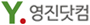
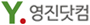
 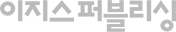
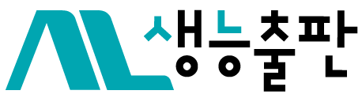
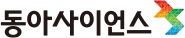
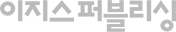
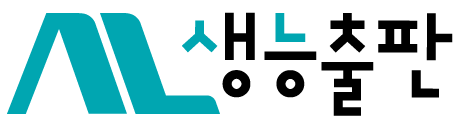
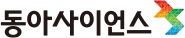
 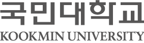
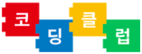
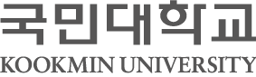
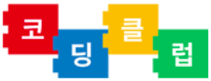
 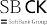
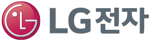
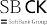
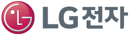

 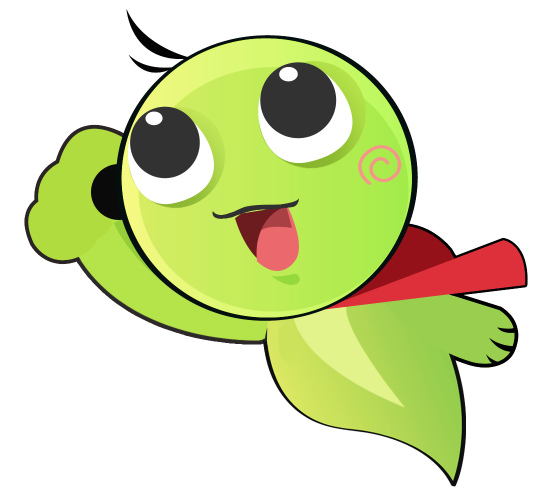
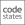
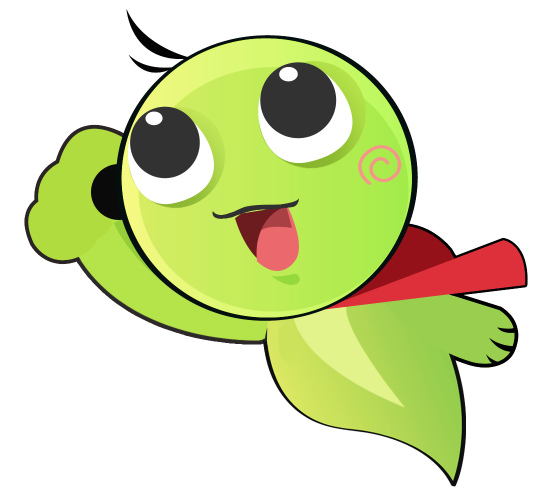
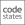

 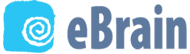
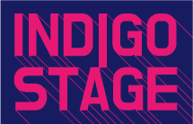
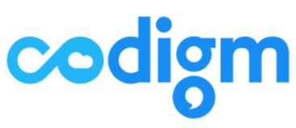
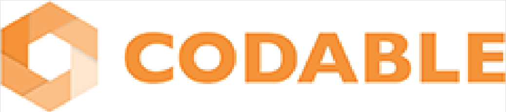
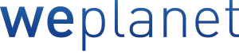
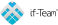
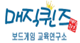
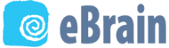
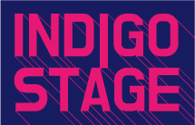
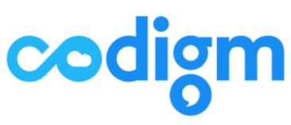
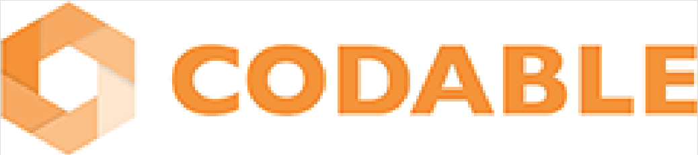
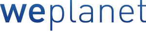
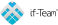
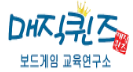


 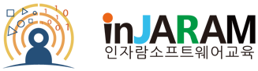
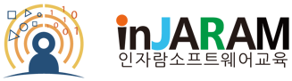
 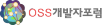
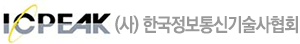
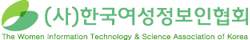
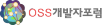
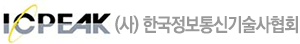
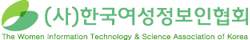